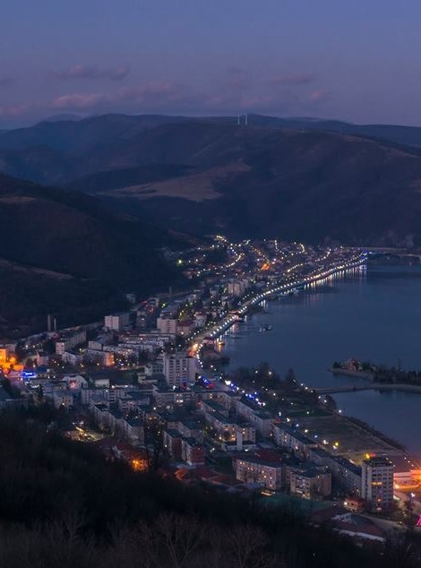

Istoria Orșovei
Orșova este un oraș din județul Mehedinți, situat pe malul Dunării. Orașul are o istorie bogată, fiind locuit încă din perioada dacică.
Atracții turistice
Orșova oferă numeroase atracții turistice, printre care:
- Chipul lui Decebal - cea mai mare sculptură în piatră din Europa.
- Clisura Dunării - peisaje spectaculoase și trasee de croazieră.
- Mănăstirea Mraconia - un loc spiritual cu o vedere uimitoare.
Cultura și tradițiile
Orșova păstrează tradițiile populare românești, fiind un centru important pentru folclorul mehedințean.
Gastronomie
Bucătăria locală este influențată de Dunăre, oferind preparate delicioase precum:
- Saramură de pește
- Plachie de crap
- Papanași cu smântână și dulceață
Contact
Pentru mai multe informații, vizitați site-ul oficial al orașului Orșova:
Site-ul oficial al Orșovei